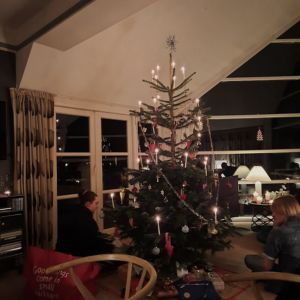
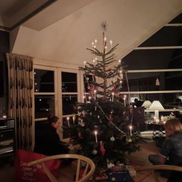

Skriveværkstedet
Find juleblokken frem igen
Velkommen tilbage til skriveværkstedet. Tiden går, og i dag er der faktisk gået præcis 365 dage. Men hvorfor skriver jeg det, det var da mærkeligt at nævne at der er gået præcist 1 år, og 1 år fra hvad? Men det er ikke så mærkeligt igen, fordi i dag vil jeg gerne have dig til at overveje og skrive lidt ned omkring et sted der virkelig betyder jul for dig
I dag tænker jeg, du skal skrive 2 steder ned, som for dig bare er lig med julen. Det kan være en bestemt by eller et specifikt sted, det skal bare være vigtigt for dig.
Formålet i dag: Der er mange steder som er fyldt med julestemning i december måned, men nogle gange har man også et helt særligt sted som har en helt særlig plads i julhjertet.
Hvad ville jeg selv skrive?
- Præstegården: En præstegård tænker du nok, men ja den der god nok. Min allerførste jul blev holdt på den præstegård som min far er opvokset i, og som min farmor og farfar havde fra ca. 1974 til december 2023. Siden min første jul på præstegården i 2005, har jeg sammen med min familie holdt uttallige juleaftner, julefrokoster og 1. adventer. Der har både været en fast julenisse, gammelt julepynt og rigtig god julemad. Men vigtigst af alt, så har det været et sted hvor julestemningen altid har været tilstede. En jul på præstegården vil for mig altid være en rigtig jul.
- Der hvor dem jeg holder af er: Tilbage til det med tiden. I dag d. 22 december er det faktisk 1 år siden jeg sidst var ude og se julegaden i Hinnerup, og måske du nu husker det? Hvis ikke så kan billede nr. 2 måske hjælpe. og det er ikke fordi at det ligenøjagtig er den gade der er særlig vigtig for mig. Det er symbol på at det ikke altid kun er stedet der gør det til noget vigtigt, det er også muligheden for at bruge tid sammen med nogle af de mennnesker man holder af, både venner og familie.
Det var måske ikke helt 2 "rigtige" steder, men sådan må det jo være – men hvilke steder tænker du mon på?
 
